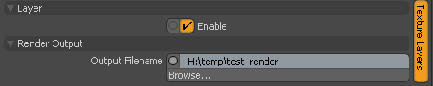
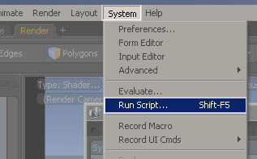
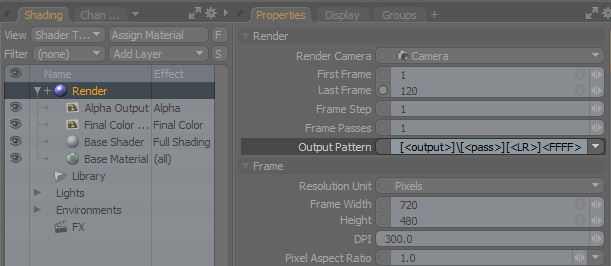
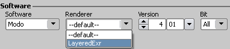
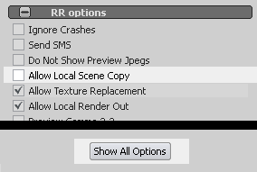

No special setup or config file change is required.
If you want to use a custom Modo config file, then please place the config into the folder
[RR]\render_apps\renderer_prefs\modo\win_x64\6.0\
You have to replace the win, the x64 and the 4.01 with the version you use.
If you do not know the right values, please render a modo job.
Then open the render log and take a look at the render commandline.
You have to run the rrWorkstationInstaller at least once to install the RR_ROOT environment variable. (Check at least "submitter plugins" and install.)
It can be that you have to restart the machine for the environment to take effect.
First you have to enable the layer and use the browse button to set an output filename. Note: The first time you set the output filename, you have to use the "Browse..." button. As you can only set the file extension via the browse button. And without a file extension, Modo will not render the Layer. |
 |
In Modo, you have to run the script RR\ render_apps\ _submitplugins\ rrSubmit_Modo_7.0+.py: |
 |
If you want to render all layers at once, you have two options:
Modo does not support subfolders inside the Output Pattern of your render settings. But with RR, you can use the output layer name as folder name. The output pattern: \[<output>]\[<output>]_[<pass>]_[<LR>]<FFFF>.ext. Note: You can NOT use the pass or any other variable as folder name. Only the output layer (<output>) can be used. Example: Your layer name is "FinalColor". You want to render into \\fileserver\ share\ myModo\ renderout\ FinalColor\ FinalColor.###.exr Set the output pattern to \[<output>]\[<output>]_[<pass>]_[<LR>]<FFFF>.ext Use the browse button for the Layers Output Filename to set the file format .exr. Set any filename in the browser like \\fileserver\ share\ myModo\ renderout\ temp.exr Close the file browser and change the output to \\fileserver\ share\ myModo\ renderout\ If you now combine the output pattern with your output filename you get: \\fileserver\ share\ myModo\ renderout\ [<output>]\ [<output>]_[<pass>]_[<LR>]<FFFF>.ext. Note: Unfortunately you cannot edit or copy-paste the Output Filename of a Layer IF you have never used the browse button before. The browse button is the only way to set the file format. If you have set the file format once, you can edit or copy-paste the path. |
 |
IMPORTANT:
Modo 801 crashes if you try to render Layered images.
You can not use it.
To render layered exr, you have to switch the renderer at the submitter to "LayeredExr".
Note: You have to use .exr as file extension for all Layers.

The submission plugin will read all cameras.
You can the same scene with multiple cameras.
But you have to use <Camera> in the modo output pattern, otherwise all jobs render the same output name.
Note: <Camera> is not supported by Modo, it is supported by RR only.
If you are using images which are relative to the scene file name, then you have to disable "Local Scene Copy".
Otherwise no image will be rendered.
